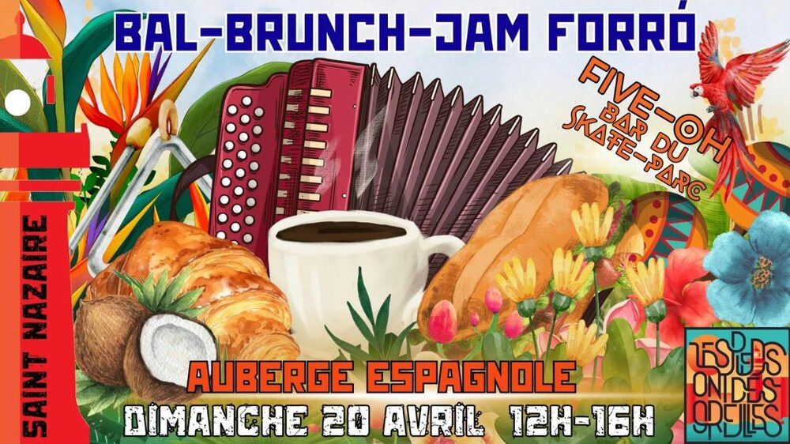

Brunch et jam forró

Lieu : Salle de convivialité de Saint-Marc, 46 bd Jules Dumont d'Urville, Saint-Nazaire
Pour terminer le week-end après le concert de Nandinho, brunch forró et JAM FORRÓ. Apportez vos instruments. Auberge espagnole, boissons fournies par le bar.